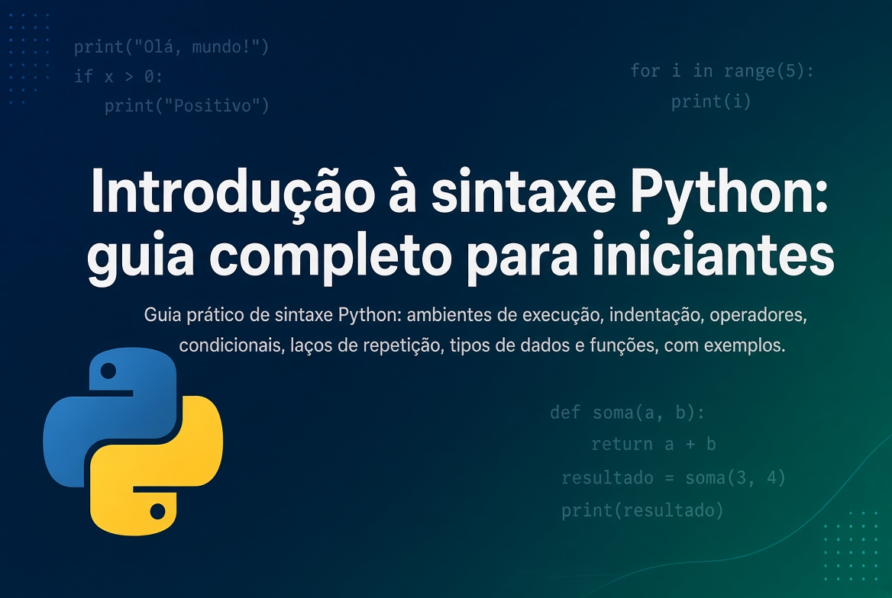

Publicado em 10 de setembro de 2026, às 07:30, por Pedro Nakashima

Este é o guia prático que faltava no texto anterior sobre por que vale a pena aprender Python em 2026: ali ficou a motivação, aqui fica a sintaxe Python que você de fato escreve todos os dias. Nas próximas seções você vai ver onde rodar seu primeiro código, como a indentação organiza um programa Python, os principais tipos de dados, os operadores matemáticos e de comparação, como escrever condicionais e laços de repetição, o que a função range() faz e como definir e chamar uma função. Nenhum desses elementos foi tratado no texto anterior — aqui é onde a sintaxe entra, peça por peça, com exemplos que rodam de verdade.
Onde escrever e rodar seu código Python
Antes de decorar comando nenhum, você precisa de um lugar para digitá-lo e ver o resultado aparecer. As quatro opções mais comuns cobrem praticamente todo mundo, e a escolha certa depende menos de gosto e mais do que você vai fazer.
Jupyter Notebook, via Anaconda
O Jupyter Notebook organiza o código em células: você escreve um pedaço, roda só aquele pedaço com Shift+Enter e vê o resultado logo abaixo, sem reexecutar o script inteiro. É o formato dominante para explorar dados, porque mistura código, texto explicativo, tabelas e gráficos no mesmo documento. A forma mais simples de ter isso instalado é a distribuição Anaconda, que já traz o Jupyter e as bibliotecas de dados mais usadas (pandas, numpy, matplotlib) prontas, sem instalação separada de cada uma.
Google Colab
O Google Colab é um Jupyter Notebook que roda inteiro no navegador, hospedado pelo Google — sem instalar nada na sua máquina, com acesso gratuito a GPU para quem for treinar modelos mais pesados. É o ponto de partida mais rápido possível: basta abrir o Google Colab numa conta Google e já há um notebook em branco pronto para receber código. A desvantagem é a dependência de internet e o fato de o ambiente resetar entre sessões, o que o torna ótimo para aprender e testar, mas não para um projeto que precisa de arquivos locais permanentes.
VS Code
O VS Code é um editor de código de uso geral, não um notebook: você abre uma pasta de projeto, escreve arquivos .py, roda scripts inteiros pelo terminal integrado e versiona tudo com Git, sem sair do editor. Com a extensão oficial de Python instalada, ele também abre notebooks Jupyter dentro da própria janela — então não é uma escolha excludente com o item anterior, é o degrau seguinte, para quando o código deixa de ser um experimento e vira um programa organizado em vários arquivos.
Outros IDEs
Duas alternativas valem menção. O PyCharm é um IDE dedicado a Python, com refatoração de código e depuração mais robustas, usado sobretudo em projetos de software maiores. O Spyder já vem junto da distribuição Anaconda e imita a divisão de painéis do RStudio (editor, console, variáveis), o que agrada quem vem da estatística. Nenhum dos dois é necessário para começar — mas é bom saber que existem quando o projeto crescer.
Resumindo a escolha:
- Quer testar um trecho de código agora, sem instalar nada: Google Colab.
- Vai explorar uma base de dados, com gráficos e texto juntos: Jupyter Notebook (Anaconda).
- Vai escrever um script ou projeto com vários arquivos: VS Code.
- Projeto científico grande, com preferência por painéis fixos: Spyder ou PyCharm.
O papel da indentação
Aqui está a diferença mais visível entre Python e a maioria das outras linguagens: não existem chaves { } para marcar onde um bloco de código começa e termina — quem marca é a indentação, isto é, os espaços no início da linha. Um bloco pertence ao comando anterior enquanto continuar recuado; a primeira linha que voltar para a margem esquerda encerra o bloco.
idade = 20
if idade >= 18:
print("maior de idade")
print("pode dirigir")
else:
print("menor de idade")As duas linhas depois do if estão recuadas quatro espaços e por isso pertencem a ele; a linha do else volta para a margem e abre um novo bloco. A convenção oficial, registrada na PEP 8, o guia de estilo da linguagem, é quatro espaços por nível, nunca tabulação — misturar os dois no mesmo bloco gera TabError e o programa nem chega a rodar. Todo editor citado na seção anterior já vem configurado para inserir quatro espaços sozinho quando você aperta Tab, então na prática isso raramente exige atenção manual; o que importa é entender que a indentação não é estética, é a própria sintaxe que decide o que está dentro e o que está fora de cada bloco.
Tipos de dados básicos
Toda informação em Python tem um tipo, e a linguagem descobre esse tipo sozinha a partir do valor — você nunca declara int x como em outras linguagens. Os tipos que aparecem o tempo todo são:
| Tipo | O que guarda | Exemplo |
|---|---|---|
int |
número inteiro | idade = 32 |
float |
número com casas decimais | preco = 19.90 |
str |
texto, entre aspas | nome = "Ana" |
bool |
verdadeiro ou falso | ativo = True |
list |
uma sequência editável de itens | notas = [7.5, 8.0, 6.5] |
dict |
pares de chave e valor | pessoa = {"nome": "Ana", "idade": 32} |
A função embutida type() revela o tipo de qualquer valor, o que ajuda bastante quando um erro aparece e não está claro por quê:
print(type(32)) # <class 'int'>
print(type(19.90)) # <class 'float'>
print(type("Ana")) # <class 'str'>Vale registrar duas variações que aparecem com frequência assim que você sai do básico: a tuple (uma lista que não pode mais ser alterada depois de criada, escrita entre parênteses) e o set (uma coleção sem ordem e sem repetição, escrita entre chaves). Nenhuma das duas é essencial no primeiro contato — mas reconhecer o nome ajuda a não estranhar quando aparecer num exemplo.
Operadores matemáticos
Além dos quatro óbvios, Python tem dois operadores que confundem quem vem de outra linguagem: a divisão inteira (//) e a exponenciação (**).
| Operador | Operação | Exemplo | Resultado |
|---|---|---|---|
+ |
soma | 7 + 3 |
10 |
- |
subtração | 7 - 3 |
4 |
* |
multiplicação | 7 * 3 |
21 |
/ |
divisão | 7 / 3 |
2.3333... |
// |
divisão inteira | 7 // 3 |
2 |
% |
resto da divisão (módulo) | 7 % 3 |
1 |
** |
potenciação | 7 ** 2 |
49 |
O módulo (%) é mais útil do que parece: é ele que responde “esse número é par?” (n % 2 == 0) sem precisar de nenhuma outra função, e é a base de qualquer código que precisa repetir um padrão a cada N itens.
Operadores de comparação
Comparar dois valores sempre devolve um bool — True ou False — e é esse resultado que alimenta os condicionais da próxima seção.
| Operador | Significado | Exemplo | Resultado |
|---|---|---|---|
== |
igual a | 5 == 5 |
True |
!= |
diferente de | 5 != 3 |
True |
> |
maior que | 5 > 3 |
True |
< |
menor que | 5 < 3 |
False |
>= |
maior ou igual a | 5 >= 5 |
True |
<= |
menor ou igual a | 5 <= 3 |
False |
Um detalhe que Python tem e a maioria das linguagens não tem: dá para encadear comparações numa única expressão, do jeito que se escreve na matemática. 0 <= nota <= 10 testa se nota está entre 0 e 10 de uma vez, sem precisar escrever nota >= 0 and nota <= 10.
Condicionais: if, elif e else
O condicional decide qual bloco de código roda, de acordo com o resultado de uma comparação. if testa a primeira condição; elif (contração de “else if”) testa outra, só se a anterior for falsa; else roda quando nenhuma das anteriores foi verdadeira.
nota = 7.5
if nota >= 9:
conceito = "A"
elif nota >= 7:
conceito = "B"
elif nota >= 5:
conceito = "C"
else:
conceito = "D"
print(conceito) # BCada elif só é avaliado se todos os testes acima dele falharam, e o Python para no primeiro bloco verdadeiro — por isso a ordem das condições importa: se a primeira linha fosse nota >= 5, o exemplo acima nunca chegaria a checar nota >= 7 ou nota >= 9.
Laços de repetição: for e while
Python tem dois laços, e a diferença entre eles não é de sintaxe, é de propósito. O for percorre uma sequência já conhecida — uma lista, um texto, um intervalo de números — item por item, e termina sozinho quando a sequência acaba.
notas = [7.5, 8.0, 6.5, 9.0]
for nota in notas:
print(nota)O while repete enquanto uma condição continuar verdadeira, sem saber de antemão quantas vezes isso vai acontecer — por isso é o laço certo para “repita até o usuário digitar sair” ou “repita até o erro ficar pequeno o bastante”.
tentativas = 0
while tentativas < 3:
print("tentativa", tentativas)
tentativas = tentativas + 1Dentro de qualquer um dos dois, break interrompe o laço na hora, e continue pula direto para a próxima repetição sem executar o resto do bloco daquela vez. A documentação oficial do Python sobre laços e condicionais detalha as variações mais avançadas, para quando o básico não bastar mais.
A função range()
range() gera uma sequência de números inteiros, e é o parceiro mais comum do for quando você quer repetir algo um número certo de vezes, em vez de percorrer uma lista já pronta.
for n in range(5):
print(n)
# 0, 1, 2, 3, 4Com um segundo argumento, range(inicio, fim) começa em inicio e vai até fim - 1 — o limite final nunca é incluído, o que costuma pegar quem está começando de surpresa:
for n in range(1, 11):
print(n)
# 1, 2, 3, 4, 5, 6, 7, 8, 9, 10Um terceiro argumento define o passo: range(0, 10, 2) produz 0, 2, 4, 6, 8, pulando de dois em dois. Vale um esclarecimento técnico: range() não cria uma lista na memória — ele devolve um objeto que gera cada número sob demanda, o que faz range(1_000_000) custar praticamente nada, mesmo cobrindo um milhão de números. Quando você precisa mesmo de uma lista de verdade, converte com list(range(5)).
Introdução a funções: definição e chamada
Uma função empacota um pedaço de código com nome, para não reescrevê-lo toda vez que precisar dele de novo. Você define a função uma vez, com def, e chama ela quantas vezes quiser depois.
def saudacao(nome):
return f"Olá, {nome}!"
print(saudacao("Maria"))
print(saudacao("Carlos"))def saudacao(nome): é a definição: o nome da função, entre parênteses o parâmetro que ela espera receber, e o bloco indentado abaixo é o que ela faz. return devolve um valor para quem chamou a função — sem ele, a função roda mas não entrega nada de volta. saudacao("Maria") é a chamada: o parêntese com um valor de verdade dentro (o argumento) dispara a execução do bloco definido antes.
Parâmetros podem ter um valor padrão, usado quando quem chama não informa nada naquela posição:
def saudacao(nome, cumprimento="Olá"):
return f"{cumprimento}, {nome}!"
print(saudacao("Maria")) # Olá, Maria!
print(saudacao("Carlos", "Bom dia")) # Bom dia, Carlos!Esse é o mesmo mecanismo por trás de toda função pronta que você já usa sem perceber — print(), range(), type() — e é exatamente o que faz uma biblioteca como o pandas funcionar: pd.read_excel("vendas.xlsx") é uma chamada de função, só que definida por outra pessoa.
Perguntas frequentes
Preciso escolher entre Jupyter, Colab e VS Code, ou posso usar mais de um?
Pode, e a maioria de quem programa usa mais de um mesmo: Colab ou Jupyter para explorar uma base de dados e testar ideias rápido, VS Code quando o código vira um script ou projeto com vários arquivos que precisa de Git e de organização.
Por que Python usa indentação em vez de chaves, como outras linguagens?
Foi uma decisão de design da linguagem, não uma limitação técnica: ao obrigar que a estrutura visual do código coincida com a estrutura lógica dele, Python torna impossível escrever um bloco que “parece” pertencer a um if mas na verdade pertence a outro — um erro comum em linguagens que usam chaves e permitem indentação livre.
Qual a diferença prática entre for e while?
Use for quando você já sabe sobre o que está iterando — uma lista, um intervalo de range(), os caracteres de um texto. Use while quando o número de repetições depende de uma condição que só se resolve durante a execução, como esperar o usuário digitar um valor válido.
range() devolve mesmo uma lista de números?
Não — devolve um objeto do tipo range, que gera os números sob demanda em vez de guardá-los todos na memória de uma vez. Para a maioria dos usos dentro de um for isso é transparente; só importa converter para list() quando você precisar manipular os números como uma lista de verdade.
Preciso declarar o tipo de retorno de uma função?
Não. Python descobre o tipo de qualquer valor sozinho, inclusive o que uma função devolve — é o que se chama de tipagem dinâmica. Dá para anotar o tipo esperado (def saudacao(nome: str) -> str:) como documentação para quem lê o código, mas isso não é obrigatório e o interpretador não impede um tipo diferente do anotado.
Conclusão
- Escolha o ambiente pelo que você vai fazer: Google Colab para começar sem instalar nada, Jupyter Notebook (via Anaconda) para explorar dados, VS Code para scripts e projetos com vários arquivos.
- A indentação não é estilo, é sintaxe: quatro espaços por nível, nunca tabulação, é o que delimita cada bloco de código em Python.
- Os tipos de dados básicos —
int,float,str,bool,listedict— cobrem a grande maioria do que você vai manipular no início. - Os operadores matemáticos (
+ - * / // % **) e os de comparação (== != > < >= <=) são a base de qualquer condicional ou laço. if/elif/elsedecidem qual bloco roda;forpercorre uma sequência conhecida,whilerepete enquanto uma condição for verdadeira;range()gera a sequência de números mais usada dentro de umfor.- Funções (
defpara definir, chamada com parênteses para executar) são o jeito de empacotar código para reutilizar — e é o mesmo mecanismo por trás de toda função pronta de biblioteca que você já usa.
Tópicos: #Python #Programacao #Tutorial #SintaxePython